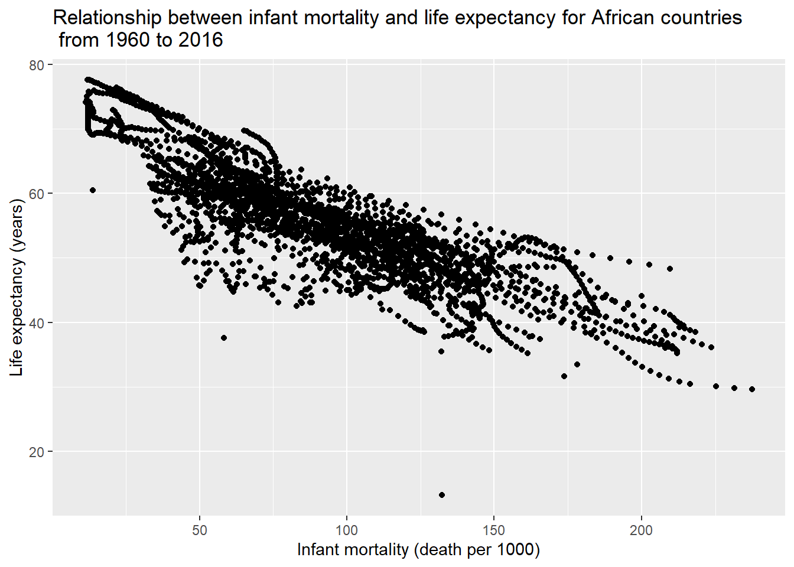
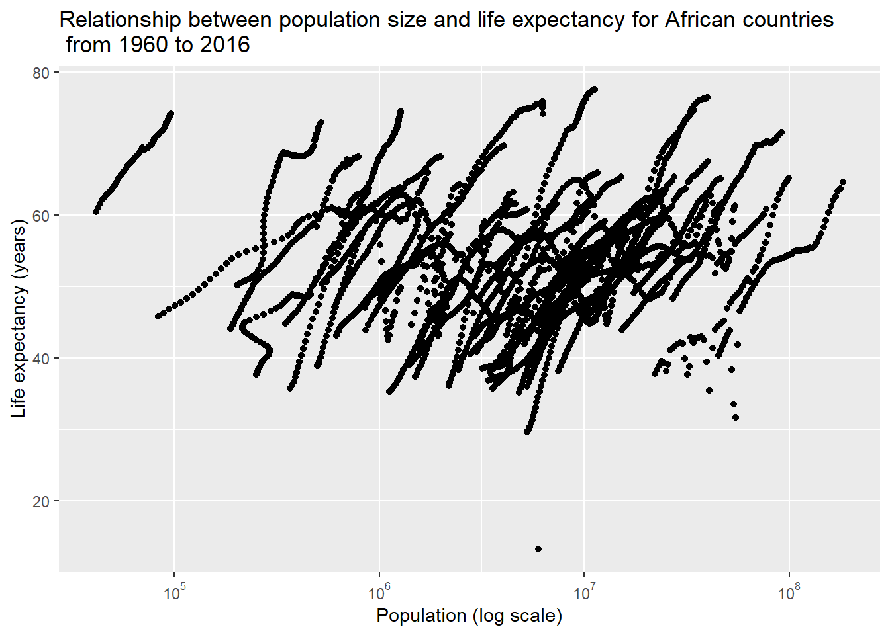
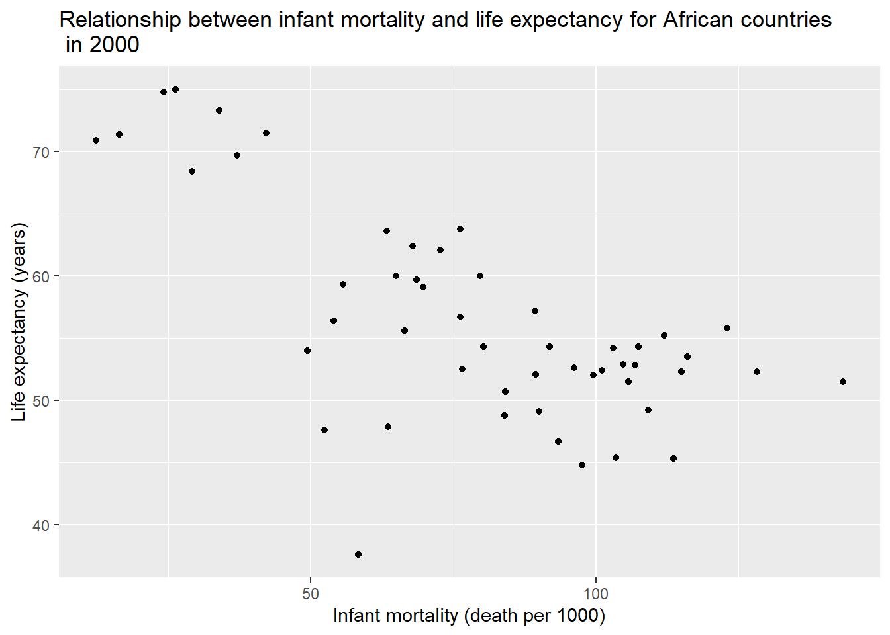
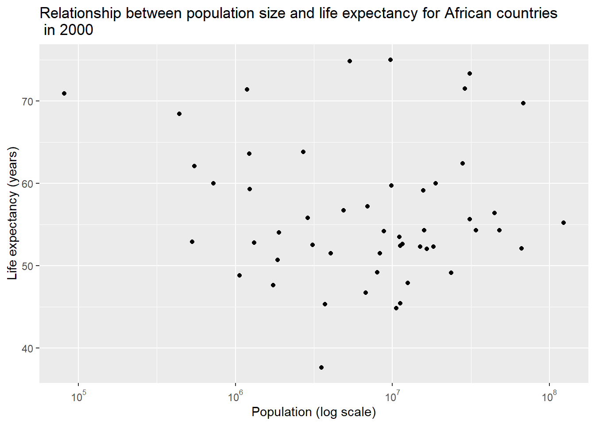
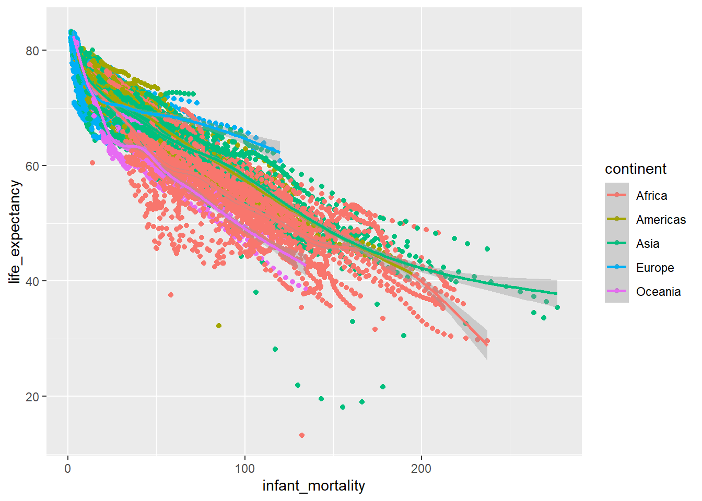
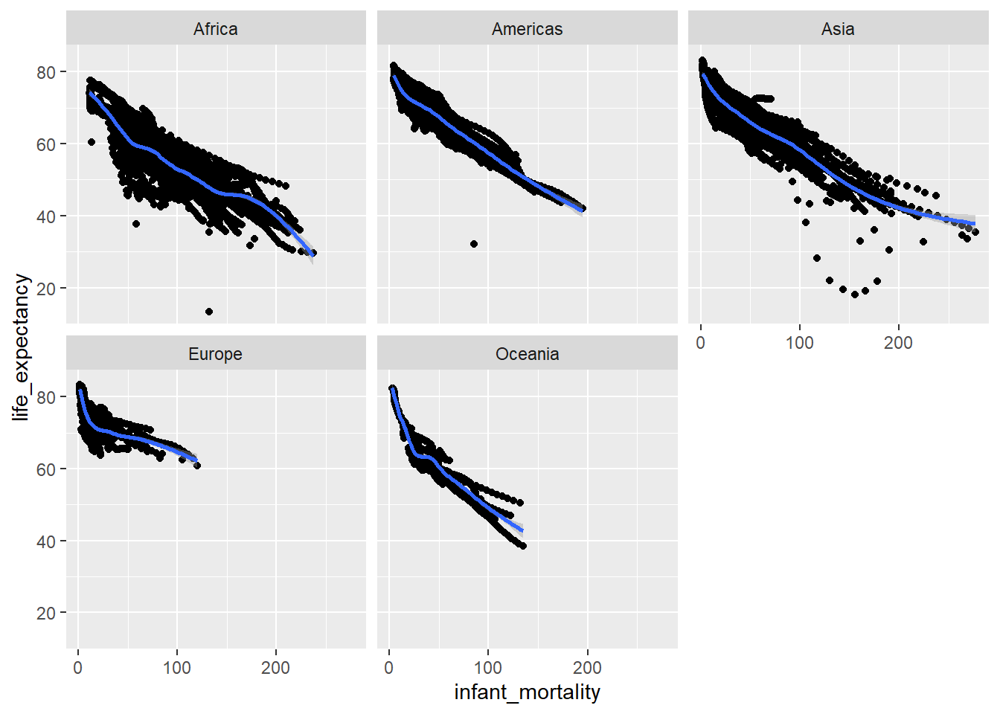
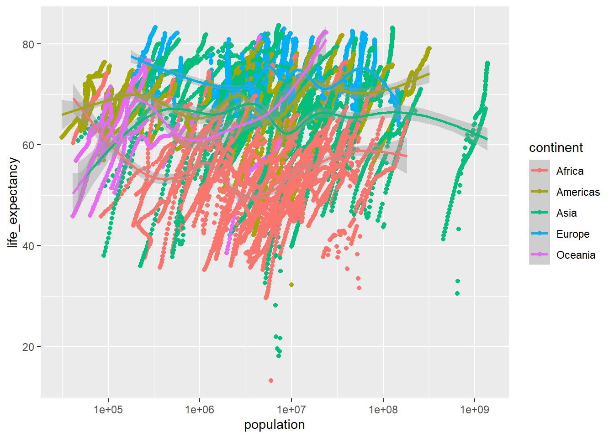
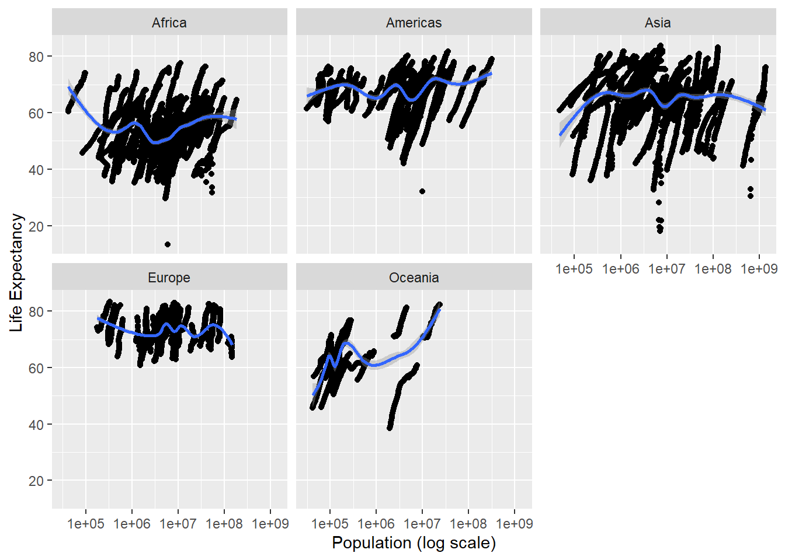
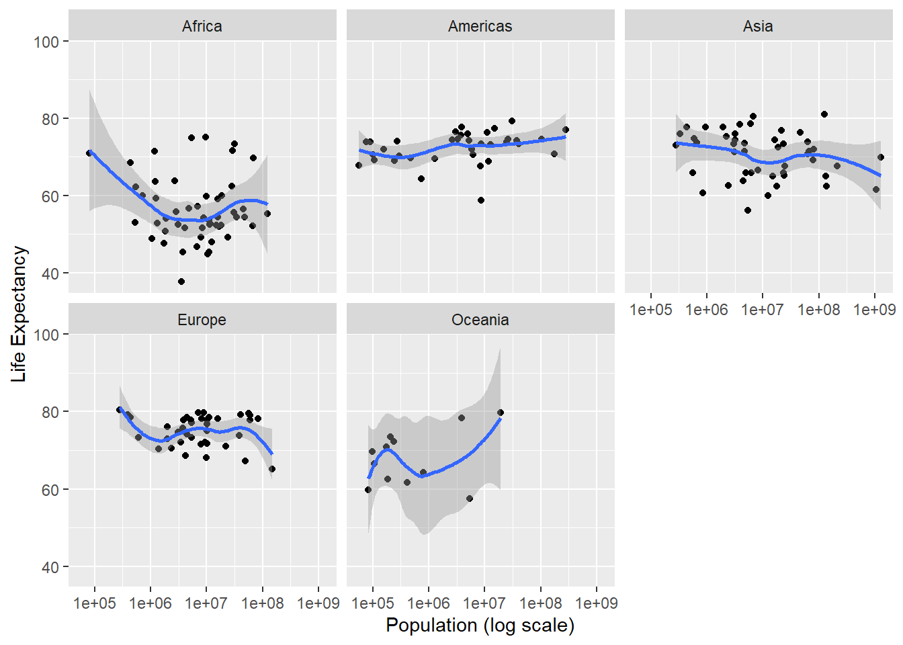

Hello! For this week’s exercise, I will explore the gapminder dataset that contains health and income outcomes from 184 countries between 1960 and 2016. This exercise will further evaluate any association between life expectancy and infant mortality or population size.
First, let’s load all R packages that will be used for this exercise
## load R packages
library(tidyverse) # tidyverse offers great tools for data wrangling and visualization
library(scales) # to access break formatting functions
library(dslabs) # to use the gapminder data from this packageI then loaded the gapminder data and checked the data structure, summary and class
## starting httpd help server ... done## 'data.frame': 10545 obs. of 9 variables:
## $ country : Factor w/ 185 levels "Albania","Algeria",..: 1 2 3 4 5 6 7 8 9 10 ...
## $ year : int 1960 1960 1960 1960 1960 1960 1960 1960 1960 1960 ...
## $ infant_mortality: num 115.4 148.2 208 NA 59.9 ...
## $ life_expectancy : num 62.9 47.5 36 63 65.4 ...
## $ fertility : num 6.19 7.65 7.32 4.43 3.11 4.55 4.82 3.45 2.7 5.57 ...
## $ population : num 1636054 11124892 5270844 54681 20619075 ...
## $ gdp : num NA 1.38e+10 NA NA 1.08e+11 ...
## $ continent : Factor w/ 5 levels "Africa","Americas",..: 4 1 1 2 2 3 2 5 4 3 ...
## $ region : Factor w/ 22 levels "Australia and New Zealand",..: 19 11 10 2 15 21 2 1 22 21 ...## country year infant_mortality life_expectancy
## Albania : 57 Min. :1960 Min. : 1.50 Min. :13.20
## Algeria : 57 1st Qu.:1974 1st Qu.: 16.00 1st Qu.:57.50
## Angola : 57 Median :1988 Median : 41.50 Median :67.54
## Antigua and Barbuda: 57 Mean :1988 Mean : 55.31 Mean :64.81
## Argentina : 57 3rd Qu.:2002 3rd Qu.: 85.10 3rd Qu.:73.00
## Armenia : 57 Max. :2016 Max. :276.90 Max. :83.90
## (Other) :10203 NA's :1453
## fertility population gdp continent
## Min. :0.840 Min. :3.124e+04 Min. :4.040e+07 Africa :2907
## 1st Qu.:2.200 1st Qu.:1.333e+06 1st Qu.:1.846e+09 Americas:2052
## Median :3.750 Median :5.009e+06 Median :7.794e+09 Asia :2679
## Mean :4.084 Mean :2.701e+07 Mean :1.480e+11 Europe :2223
## 3rd Qu.:6.000 3rd Qu.:1.523e+07 3rd Qu.:5.540e+10 Oceania : 684
## Max. :9.220 Max. :1.376e+09 Max. :1.174e+13
## NA's :187 NA's :185 NA's :2972
## region
## Western Asia :1026
## Eastern Africa : 912
## Western Africa : 912
## Caribbean : 741
## South America : 684
## Southern Europe: 684
## (Other) :5586## [1] "data.frame"Before working on some data visualization and fitting model. I ran a couple lines of code to create new objects and check their data structure and summary. First of all, I use subset function to select only African countries by specifying where the continent variable is “Africa”, and named the object africadata. Next, I ran str() and summary() to see the structure and summary of both objects.
#assign African countries to a new object
africadata <- subset(gapminder, continent == "Africa")
#create two new objects
imr.le <- africadata[,c("infant_mortality","life_expectancy")]#first one contains "infant_mortality" and "life_expectancy"
pop.le <- africadata[,c("population","life_expectancy")]#first one contains "population " and "life_expectancy"## 'data.frame': 2907 obs. of 9 variables:
## $ country : Factor w/ 185 levels "Albania","Algeria",..: 2 3 18 22 26 27 29 31 32 33 ...
## $ year : int 1960 1960 1960 1960 1960 1960 1960 1960 1960 1960 ...
## $ infant_mortality: num 148 208 187 116 161 ...
## $ life_expectancy : num 47.5 36 38.3 50.3 35.2 ...
## $ fertility : num 7.65 7.32 6.28 6.62 6.29 6.95 5.65 6.89 5.84 6.25 ...
## $ population : num 11124892 5270844 2431620 524029 4829291 ...
## $ gdp : num 1.38e+10 NA 6.22e+08 1.24e+08 5.97e+08 ...
## $ continent : Factor w/ 5 levels "Africa","Americas",..: 1 1 1 1 1 1 1 1 1 1 ...
## $ region : Factor w/ 22 levels "Australia and New Zealand",..: 11 10 20 17 20 5 10 20 10 10 ...## country year infant_mortality life_expectancy
## Algeria : 57 Min. :1960 Min. : 11.40 Min. :13.20
## Angola : 57 1st Qu.:1974 1st Qu.: 62.20 1st Qu.:48.23
## Benin : 57 Median :1988 Median : 93.40 Median :53.98
## Botswana : 57 Mean :1988 Mean : 95.12 Mean :54.38
## Burkina Faso: 57 3rd Qu.:2002 3rd Qu.:124.70 3rd Qu.:60.10
## Burundi : 57 Max. :2016 Max. :237.40 Max. :77.60
## (Other) :2565 NA's :226
## fertility population gdp continent
## Min. :1.500 Min. : 41538 Min. :4.659e+07 Africa :2907
## 1st Qu.:5.160 1st Qu.: 1605232 1st Qu.:8.373e+08 Americas: 0
## Median :6.160 Median : 5570982 Median :2.448e+09 Asia : 0
## Mean :5.851 Mean : 12235961 Mean :9.346e+09 Europe : 0
## 3rd Qu.:6.860 3rd Qu.: 13888152 3rd Qu.:6.552e+09 Oceania : 0
## Max. :8.450 Max. :182201962 Max. :1.935e+11
## NA's :51 NA's :51 NA's :637
## region
## Eastern Africa :912
## Western Africa :912
## Middle Africa :456
## Northern Africa :342
## Southern Africa :285
## Australia and New Zealand: 0
## (Other) : 0## 'data.frame': 2907 obs. of 2 variables:
## $ infant_mortality: num 148 208 187 116 161 ...
## $ life_expectancy : num 47.5 36 38.3 50.3 35.2 ...## infant_mortality life_expectancy
## Min. : 11.40 Min. :13.20
## 1st Qu.: 62.20 1st Qu.:48.23
## Median : 93.40 Median :53.98
## Mean : 95.12 Mean :54.38
## 3rd Qu.:124.70 3rd Qu.:60.10
## Max. :237.40 Max. :77.60
## NA's :226## 'data.frame': 2907 obs. of 2 variables:
## $ population : num 11124892 5270844 2431620 524029 4829291 ...
## $ life_expectancy: num 47.5 36 38.3 50.3 35.2 ...## population life_expectancy
## Min. : 41538 Min. :13.20
## 1st Qu.: 1605232 1st Qu.:48.23
## Median : 5570982 Median :53.98
## Mean : 12235961 Mean :54.38
## 3rd Qu.: 13888152 3rd Qu.:60.10
## Max. :182201962 Max. :77.60
## NA's :51I used ggplot() to create two separate scatter plots from the objects I just created, The first one plotted life expectancy against infant mortality, while the second one plotted life expectancy against population size.
#scatter plot of infant mortality and life expectancy from 1960 to 2016
imr.le %>%
ggplot(aes(x=infant_mortality, y=life_expectancy)) +
geom_point() +
#add plot title
ggtitle("Relationship between infant mortality and life expectancy for African countries\n from 1960 to 2016") +
#change x-axis label
xlab("Infant mortality (death per 1000)") +
#change y-axis label
ylab("Life expectancy (years)") ## Warning: Removed 226 rows containing missing values (geom_point).
The plot shows that there was a negative correlation between infant mortality and life expectancy.
#scatterplot of population and life expectancy from 1960 to 2016
pop.le %>%
ggplot(aes(x=population, y=life_expectancy)) +
geom_point() +
#transform and reformat x-axis to log scale
scale_x_continuous(trans = 'log10',
labels = trans_format("log10", math_format(10^.x))) +
#add plot title
ggtitle("Relationship between population size and life expectancy for African countries\n from 1960 to 2016") +
#change x-axis label
xlab("Population (log scale)") +
#change y-axis label
ylab("Life expectancy (years)") ## Warning: Removed 51 rows containing missing values (geom_point).
We can see that there were some streaks following a positive and linear trend between population and life expectancy. This could result from the source that mixed data from different countries across multiple years, so my next step is to try to avoid this noise and only look into the data from a particular year.
I grouped the data by year and summarized how many missing data in infant mortality across each year, then I filtered out only those years with missing data.
#write code that figures out which years have missing data for infant mortality
africadata %>%
group_by(year) %>%
summarise(infant_mortality_na = sum(is.na(infant_mortality))) %>%
filter(infant_mortality_na > 0) #missing up to 1981 and 2016## # A tibble: 23 x 2
## year infant_mortality_na
## <int> <int>
## 1 1960 10
## 2 1961 17
## 3 1962 16
## 4 1963 16
## 5 1964 15
## 6 1965 14
## 7 1966 13
## 8 1967 11
## 9 1968 11
## 10 1969 7
## # ... with 13 more rowsThere were some missing data in infant mortality from 1960 to 1981 and 2016 (n=226). Hence, I will only use the data from 2000 to create the same two plots again.
#create new object to extract data for 2000
africadata2000 <- africadata[africadata$year == 2000,]
#take a look at data structure and summary
str(africadata2000)## 'data.frame': 51 obs. of 9 variables:
## $ country : Factor w/ 185 levels "Albania","Algeria",..: 2 3 18 22 26 27 29 31 32 33 ...
## $ year : int 2000 2000 2000 2000 2000 2000 2000 2000 2000 2000 ...
## $ infant_mortality: num 33.9 128.3 89.3 52.4 96.2 ...
## $ life_expectancy : num 73.3 52.3 57.2 47.6 52.6 46.7 54.3 68.4 45.3 51.5 ...
## $ fertility : num 2.51 6.84 5.98 3.41 6.59 7.06 5.62 3.7 5.45 7.35 ...
## $ population : num 31183658 15058638 6949366 1736579 11607944 ...
## $ gdp : num 5.48e+10 9.13e+09 2.25e+09 5.63e+09 2.61e+09 ...
## $ continent : Factor w/ 5 levels "Africa","Americas",..: 1 1 1 1 1 1 1 1 1 1 ...
## $ region : Factor w/ 22 levels "Australia and New Zealand",..: 11 10 20 17 20 5 10 20 10 10 ...## country year infant_mortality life_expectancy
## Algeria : 1 Min. :2000 Min. : 12.30 Min. :37.60
## Angola : 1 1st Qu.:2000 1st Qu.: 60.80 1st Qu.:51.75
## Benin : 1 Median :2000 Median : 80.30 Median :54.30
## Botswana : 1 Mean :2000 Mean : 78.93 Mean :56.36
## Burkina Faso: 1 3rd Qu.:2000 3rd Qu.:103.30 3rd Qu.:60.00
## Burundi : 1 Max. :2000 Max. :143.30 Max. :75.00
## (Other) :45
## fertility population gdp continent
## Min. :1.990 Min. : 81154 Min. :2.019e+08 Africa :51
## 1st Qu.:4.150 1st Qu.: 2304687 1st Qu.:1.274e+09 Americas: 0
## Median :5.550 Median : 8799165 Median :3.238e+09 Asia : 0
## Mean :5.156 Mean : 15659800 Mean :1.155e+10 Europe : 0
## 3rd Qu.:5.960 3rd Qu.: 17391242 3rd Qu.:8.654e+09 Oceania : 0
## Max. :7.730 Max. :122876723 Max. :1.329e+11
##
## region
## Eastern Africa :16
## Western Africa :16
## Middle Africa : 8
## Northern Africa : 6
## Southern Africa : 5
## Australia and New Zealand: 0
## (Other) : 0#scatterplot of infant mortality and life expectancy only for year of 2000
africadata2000 %>%
ggplot(aes(x=infant_mortality, y=life_expectancy)) +
geom_point() +
ggtitle("Relationship between infant mortality and life expectancy for African countries\n in 2000") + #add plot title
xlab("Infant mortality (death per 1000)") + #change x-axis label
ylab("Life expectancy (years)") #change y-axis label
We still observed a negative correlation between infant mortality and life expectancy from the data in 2000.
#scatterplot of population and life expectancy only for year of 2000
africadata2000 %>%
ggplot(aes(x=population, y=life_expectancy)) +
geom_point() +
scale_x_continuous(trans = 'log10',
labels = trans_format("log10", math_format(10^.x))) + #transform and reformat x-axis to log scale
ggtitle("Relationship between population size and life expectancy for African countries\n in 2000") + #add plot title
xlab("Population (log scale)") + #change x-axis label
ylab("Life expectancy (years)") #change y-axis label
However, we no longer saw any apparent correlation between population size and life expectancy when we looked into only the data in 2000.
The final step is to fit two linear regression models by regressing life expectancy on infant mortality and population size separately.
# fit a linear model to regress life expectancy on infant mortality using only 2000 data
fit1 <- lm(life_expectancy ~ infant_mortality, data = africadata2000)
summary(fit1)##
## Call:
## lm(formula = life_expectancy ~ infant_mortality, data = africadata2000)
##
## Residuals:
## Min 1Q Median 3Q Max
## -22.6651 -3.7087 0.9914 4.0408 8.6817
##
## Coefficients:
## Estimate Std. Error t value Pr(>|t|)
## (Intercept) 71.29331 2.42611 29.386 < 2e-16 ***
## infant_mortality -0.18916 0.02869 -6.594 2.83e-08 ***
## ---
## Signif. codes: 0 '***' 0.001 '**' 0.01 '*' 0.05 '.' 0.1 ' ' 1
##
## Residual standard error: 6.221 on 49 degrees of freedom
## Multiple R-squared: 0.4701, Adjusted R-squared: 0.4593
## F-statistic: 43.48 on 1 and 49 DF, p-value: 2.826e-08The significant p-value (p=<0.0001) indicated a linear relationship between infant mortality and life expectancy, and the coefficient showed that the life expectancy goes down by 0.19 for every 1 unit increase in infant mortality.
# fit a linear model to regress life expectancy on population size using only 2000 data
fit2 <- lm(life_expectancy ~ population, data = africadata2000)
summary(fit2)##
## Call:
## lm(formula = life_expectancy ~ population, data = africadata2000)
##
## Residuals:
## Min 1Q Median 3Q Max
## -18.429 -4.602 -2.568 3.800 18.802
##
## Coefficients:
## Estimate Std. Error t value Pr(>|t|)
## (Intercept) 5.593e+01 1.468e+00 38.097 <2e-16 ***
## population 2.756e-08 5.459e-08 0.505 0.616
## ---
## Signif. codes: 0 '***' 0.001 '**' 0.01 '*' 0.05 '.' 0.1 ' ' 1
##
## Residual standard error: 8.524 on 49 degrees of freedom
## Multiple R-squared: 0.005176, Adjusted R-squared: -0.01513
## F-statistic: 0.2549 on 1 and 49 DF, p-value: 0.6159The insignificant p-value (p=0.6158781) and a coefficient close to zero indicated that an absence of linear association between population size and life expectancy.
I am interested in seeing a similar analysis to what we have already done with the Africa data, but this time apply it to other continents!
I will use one additional package, broom, to help present my output, so I’ll load that now.
First, I want to visualize the relationship between infant mortality and life expectancy, and I’ll use colors to differentiate between the continents.
# Create an object with just the infant mortality, life expectancy, and continent data
v1smh <-
select(gapminder, infant_mortality, life_expectancy, continent)
# Plot the data with different colors being different continents
ggplot(data = v1smh, aes(infant_mortality, life_expectancy, color = continent)) +
geom_point() +
geom_smooth() ## `geom_smooth()` using method = 'gam' and formula 'y ~ s(x, bs = "cs")'## Warning: Removed 1453 rows containing non-finite values (stat_smooth).## Warning: Removed 1453 rows containing missing values (geom_point).
This is pretty messy, and doesn’t show much, so I want to try and visualize it a different way.
# Plotting the data the same way, this time with different continents each having their own plots
ggplot(data = v1smh, aes(infant_mortality, life_expectancy)) +
geom_point() +
geom_smooth() +
facet_wrap(~ continent)## `geom_smooth()` using method = 'gam' and formula 'y ~ s(x, bs = "cs")'## Warning: Removed 1453 rows containing non-finite values (stat_smooth).## Warning: Removed 1453 rows containing missing values (geom_point).
This is a little more clear, and shows the same basic trend (which we would expect) - as infant mortality increases, life expectancy decreases. One noticible difference between the continents is Africa and Asia seem to have increased infant mortality as compared to the others.
Now I’ll do the same thing with the population and life expectancy.
#Create another object, now with population instead of infant mortality
v2smh <-
select(gapminder, population, life_expectancy, continent)
# Plot the data with different colors being different continents, with population on a log scale
ggplot(data = v2smh, aes(population, life_expectancy, color = continent)) +
scale_x_continuous(trans = 'log10') +
geom_point() +
geom_smooth() ## `geom_smooth()` using method = 'gam' and formula 'y ~ s(x, bs = "cs")'## Warning: Removed 185 rows containing non-finite values (stat_smooth).## Warning: Removed 185 rows containing missing values (geom_point).
Again, this is a MESS. Let’s try it again.
# Plot life expectancy against log population
ggplot(data = v2smh, aes(population, life_expectancy)) +
scale_x_continuous(trans = 'log10') +
geom_point() +
geom_smooth() +
facet_wrap(~ continent) +
xlab('Population (log scale)') +
ylab('Life Expectancy') ## `geom_smooth()` using method = 'gam' and formula 'y ~ s(x, bs = "cs")'## Warning: Removed 185 rows containing non-finite values (stat_smooth).## Warning: Removed 185 rows containing missing values (geom_point).
Definitely more readable, but as with our first run-through on the analysis, there doesn’t seem to be a true trend. I’m going to focus on this for an actual analysis.
First I want to see if there are any years that are missing data, so that I can choose one year to focus on without missing data.
# Create object that only contains missing population information according to year and continent
whatsmissing <-
gapminder %>%
select(year, population, continent) %>%
filter(is.na(population))2016 appears to be the only year with missing population data, so for consistency’s sake, I’ll use the year 2000 again.
#Create an object containing population, life expectancy, continent, and year data, and then narrow that down to only data from the year 2000
poplife2000 <-
select(gapminder, population, life_expectancy, continent, year) %>%
filter(year == 2000)Now I’ll recreate the plots with the year 2000 data.
#Plot life expectancy against log population for the year 2000
ggplot(data = poplife2000, aes(population, life_expectancy)) +
scale_x_continuous(trans = 'log10') +
geom_point() +
geom_smooth() +
facet_wrap(~ continent) +
xlab('Population (log scale)') +
ylab('Life Expectancy') ## `geom_smooth()` using method = 'loess' and formula 'y ~ x'
Less cluttered, but not super clear. I’ll run a simple linear regression to see if there’s any significant relationship overall.
# Fit a simple linear model with population and life expectancy across all continents
fitall <- lm(life_expectancy ~ population, data = poplife2000)
summary(fitall)##
## Call:
## lm(formula = life_expectancy ~ population, data = poplife2000)
##
## Residuals:
## Min 1Q Median 3Q Max
## -30.19 -6.09 3.01 6.91 13.21
##
## Coefficients:
## Estimate Std. Error t value Pr(>|t|)
## (Intercept) 6.779e+01 7.303e-01 92.826 <2e-16 ***
## population 3.197e-11 5.677e-09 0.006 0.996
## ---
## Signif. codes: 0 '***' 0.001 '**' 0.01 '*' 0.05 '.' 0.1 ' ' 1
##
## Residual standard error: 9.613 on 183 degrees of freedom
## Multiple R-squared: 1.734e-07, Adjusted R-squared: -0.005464
## F-statistic: 3.173e-05 on 1 and 183 DF, p-value: 0.9955## # A tibble: 2 x 5
## term estimate std.error statistic p.value
## <chr> <dbl> <dbl> <dbl> <dbl>
## 1 (Intercept) 6.78e+ 1 0.730 92.8 7.42e-156
## 2 population 3.20e-11 0.00000000568 0.00563 9.96e- 1If we look at the relationship overall, there is definitely no significant relationship here. What if we take it to individual continents?
# Create object with just Africa from year 2000 data
afr2000 <-
poplife2000 %>%
filter(continent == "Africa")
# Fit simple linear model with population and life expectancy for Africa
fitafr <- lm(life_expectancy ~ population, data = afr2000)
summary(fitafr)##
## Call:
## lm(formula = life_expectancy ~ population, data = afr2000)
##
## Residuals:
## Min 1Q Median 3Q Max
## -18.429 -4.602 -2.568 3.800 18.802
##
## Coefficients:
## Estimate Std. Error t value Pr(>|t|)
## (Intercept) 5.593e+01 1.468e+00 38.097 <2e-16 ***
## population 2.756e-08 5.459e-08 0.505 0.616
## ---
## Signif. codes: 0 '***' 0.001 '**' 0.01 '*' 0.05 '.' 0.1 ' ' 1
##
## Residual standard error: 8.524 on 49 degrees of freedom
## Multiple R-squared: 0.005176, Adjusted R-squared: -0.01513
## F-statistic: 0.2549 on 1 and 49 DF, p-value: 0.6159## # A tibble: 2 x 5
## term estimate std.error statistic p.value
## <chr> <dbl> <dbl> <dbl> <dbl>
## 1 (Intercept) 55.9 1.47 38.1 4.51e-38
## 2 population 0.0000000276 0.0000000546 0.505 6.16e- 1# Create object with just Americas from year 2000 data
ame2000 <-
poplife2000 %>%
filter(continent == "Americas")
# Fit simple linear model with population and life expectancy for Americas
fitame <- lm(life_expectancy ~ population, data = ame2000)
summary(fitame)##
## Call:
## lm(formula = life_expectancy ~ population, data = ame2000)
##
## Residuals:
## Min 1Q Median 3Q Max
## -13.5126 -2.4481 0.9723 2.1696 6.6652
##
## Coefficients:
## Estimate Std. Error t value Pr(>|t|)
## (Intercept) 7.209e+01 7.293e-01 98.846 <2e-16 ***
## population 1.454e-08 1.224e-08 1.188 0.243
## ---
## Signif. codes: 0 '***' 0.001 '**' 0.01 '*' 0.05 '.' 0.1 ' ' 1
##
## Residual standard error: 4.027 on 34 degrees of freedom
## Multiple R-squared: 0.03986, Adjusted R-squared: 0.01162
## F-statistic: 1.411 on 1 and 34 DF, p-value: 0.2431## # A tibble: 2 x 5
## term estimate std.error statistic p.value
## <chr> <dbl> <dbl> <dbl> <dbl>
## 1 (Intercept) 72.1 0.729 98.8 2.06e-43
## 2 population 0.0000000145 0.0000000122 1.19 2.43e- 1# Create object with just Asia from year 2000 data
asi2000 <-
poplife2000 %>%
filter(continent == "Asia")
# Fit simple linear model with population and life expectancy for Asia
fitasi <- lm(life_expectancy ~ population, data = asi2000)
summary(fitasi)##
## Call:
## lm(formula = life_expectancy ~ population, data = asi2000)
##
## Residuals:
## Min 1Q Median 3Q Max
## -14.695 -4.915 1.533 4.466 10.732
##
## Coefficients:
## Estimate Std. Error t value Pr(>|t|)
## (Intercept) 7.082e+01 9.298e-01 76.164 <2e-16 ***
## population -4.377e-09 3.775e-09 -1.159 0.252
## ---
## Signif. codes: 0 '***' 0.001 '**' 0.01 '*' 0.05 '.' 0.1 ' ' 1
##
## Residual standard error: 6.058 on 45 degrees of freedom
## Multiple R-squared: 0.02901, Adjusted R-squared: 0.007432
## F-statistic: 1.344 on 1 and 45 DF, p-value: 0.2524## # A tibble: 2 x 5
## term estimate std.error statistic p.value
## <chr> <dbl> <dbl> <dbl> <dbl>
## 1 (Intercept) 7.08e+1 0.930 76.2 3.29e-49
## 2 population -4.38e-9 0.00000000378 -1.16 2.52e- 1# Create object with just Europe from year 2000 data
eur2000 <-
poplife2000 %>%
filter(continent == "Europe")
# Fit simple linear model with population and life expectancy for Europe
fiteur <- lm(life_expectancy ~ population, data = eur2000)
summary(fiteur)##
## Call:
## lm(formula = life_expectancy ~ population, data = eur2000)
##
## Residuals:
## Min 1Q Median 3Q Max
## -7.2647 -3.3597 0.5178 3.1744 5.5239
##
## Coefficients:
## Estimate Std. Error t value Pr(>|t|)
## (Intercept) 7.564e+01 7.586e-01 99.707 <2e-16 ***
## population -2.730e-08 2.212e-08 -1.234 0.225
## ---
## Signif. codes: 0 '***' 0.001 '**' 0.01 '*' 0.05 '.' 0.1 ' ' 1
##
## Residual standard error: 3.979 on 37 degrees of freedom
## Multiple R-squared: 0.03954, Adjusted R-squared: 0.01358
## F-statistic: 1.523 on 1 and 37 DF, p-value: 0.2249## # A tibble: 2 x 5
## term estimate std.error statistic p.value
## <chr> <dbl> <dbl> <dbl> <dbl>
## 1 (Intercept) 75.6 0.759 99.7 1.40e-46
## 2 population -0.0000000273 0.0000000221 -1.23 2.25e- 1# Create object with just Oceania from year 2000 data
oci2000 <-
poplife2000 %>%
filter(continent == "Oceania")
# Fit simple linear model with population and life expectancy for Africa
fitoci <- lm(life_expectancy ~ population, data = oci2000)
summary(fitoci)##
## Call:
## lm(formula = life_expectancy ~ population, data = oci2000)
##
## Residuals:
## Min 1Q Median 3Q Max
## -12.2796 -4.3414 0.8319 4.5676 9.5473
##
## Coefficients:
## Estimate Std. Error t value Pr(>|t|)
## (Intercept) 6.649e+01 2.144e+00 31.020 2.85e-11 ***
## population 6.115e-07 3.668e-07 1.667 0.126
## ---
## Signif. codes: 0 '***' 0.001 '**' 0.01 '*' 0.05 '.' 0.1 ' ' 1
##
## Residual standard error: 6.678 on 10 degrees of freedom
## Multiple R-squared: 0.2175, Adjusted R-squared: 0.1392
## F-statistic: 2.779 on 1 and 10 DF, p-value: 0.1265## # A tibble: 2 x 5
## term estimate std.error statistic p.value
## <chr> <dbl> <dbl> <dbl> <dbl>
## 1 (Intercept) 66.5 2.14 31.0 2.85e-11
## 2 population 0.000000611 0.000000367 1.67 1.26e- 1Unfortunately, it doesn’t look like there are relationships, at least at this level. However, I think looking for these things is important, even if you don’t find any statistical relationships! And it’s always fun to do quick analyses to check!